Learning to Evade: Statistical Learning-Based Adaptive Attacks Towards Audio Watermarking
Abstract:The abuse of original audios has attracted widespread attention in the society. Audio watermarking has been proposed as a way to assert user copyright of audios. However, existing audio watermarking methods are vulnerable to adversarial attacks. Our findings reveal that the message probabilities output by the watermark decoder follow a normal distribution for both clean and watermarked audio. This observation can be leveraged to detect existing audio watermark attacks. In this paper, we introduce AWM, an adaptive audio watermark attack method designed to bypass existing detection strategies. AWM employs a two-step optimization process: the first step ensures the success of the watermark attack, while the second step focuses on enhancing audio quality. The proposed attack iteratively estimates the parameters of the normal distribution using limited audio samples based on the target audio and applies adaptive optimization to adjust the decoded message probabilities toward the estimated normal range. We evaluate AWM on two watermarking methods across three diverse voice datasets and compare the results with existing audio watermark attack techniques. Our experiments demonstrate that the proposed attack achieves a high attack success rate while effectively bypassing detection, with detection success rates remaining under 10% for watermark replacement and watermark creation, and at 0% for watermark removal.
Demonstration
We compare our attack method with AudioMarkBench: AuioMarkBench [NeurIPS 2024] a benchmark designed to evaluate the robustness of audio watermarking against adversarial attacks
We evaluate two audio watermarking methods:
Benign Distribution
For both clean/unwatermarked and watermarked audio, we observe two distinct distributions, each following a normal distribution pattern
| AudioSeal | Timbre | |
| Clean/Unwatermarked | 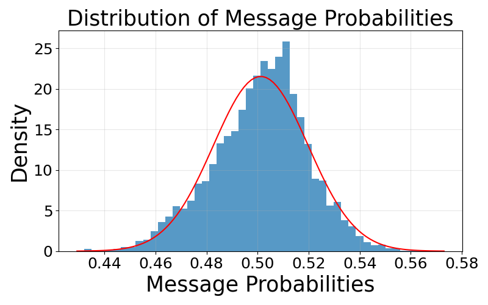 | 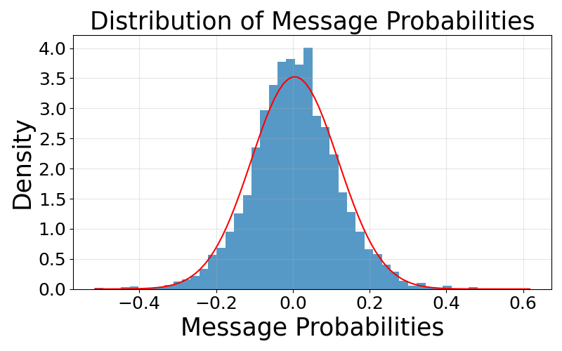 |
| Watermarked |  |
Some explanations for Spectrogram and Distribution in the Watermark Replacement, Watermark Creation, and Watermark Removal:
- SpectrogramRed Box: some noticeable noise; Green Box: some noticeable noise is reduced.
- DistributionOrange Color: outliers; Blue Color: not outliers
Watermark Replacement
Watermark replacement aims to replace an existing watermark with a different one
| Attack (AudioSeal) | Original (Clean) | Watermark | AudioMarkBench | Ours | Ours (+opt) |
| Audios | |||||
| Spectrogram |  |
 |
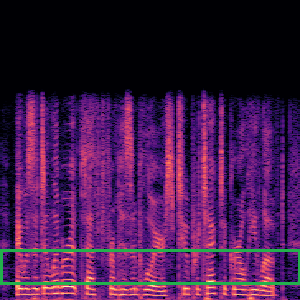 | ||
| Watermark Message | ---------------- | 000001110101100 | 1111111100000000 | 1111111100000000 | 1111111100000000 |
| Distribution | ---------------- | 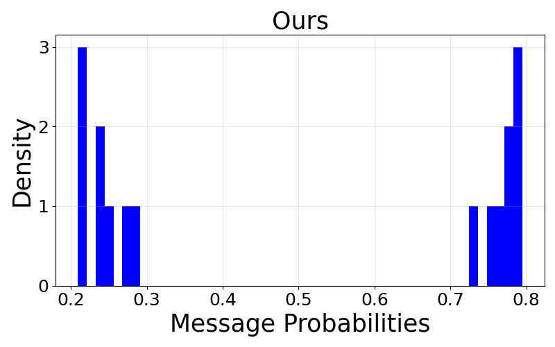 | 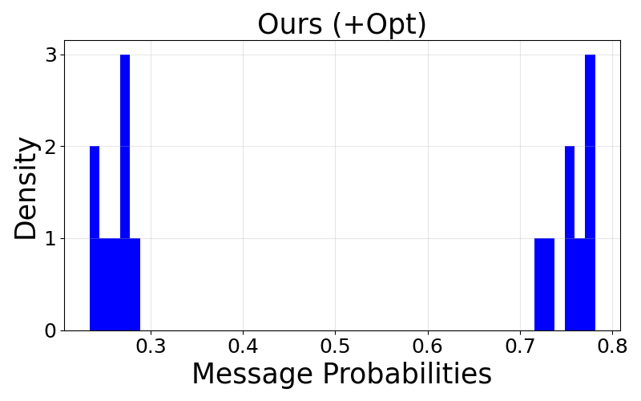 |
| Attack (Timbre) | Original (Clean) | Watermark | AudioMarkBench | Ours | Ours (+opt) |
| Audios | |||||
| Spectrogram | 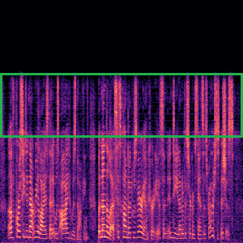 | 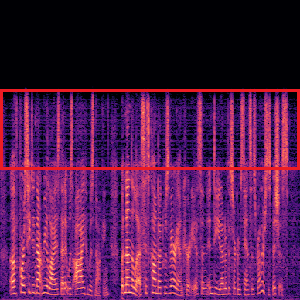 | |||
| Watermark Message | ---------------- | 1111010111111110 | 1111111100000000 | 1111111100000000 | 1111111100000000 |
| Distribution | ---------------- | 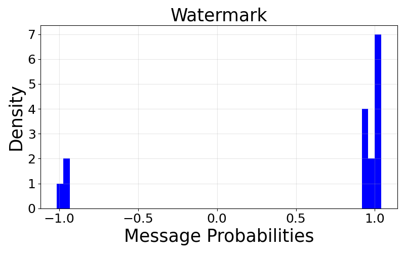 | 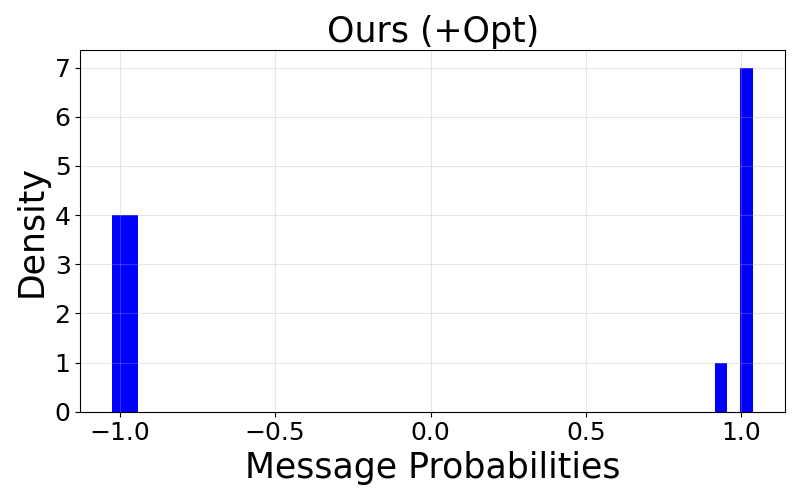 |
Watermark Creation
Watermark creation aims to embed a new watermark into clean audio
| Attack (AudioSeal) | Original (Clean) | Watermark | AudioMarkBench | Ours | Ours (+opt) |
| Audios | |||||
| Spectrogram | 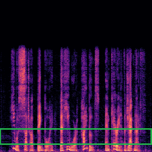 | ||||
| Watermark Message | ---------------- | 1111111011011111 | 1111111100000000 | 1111111100000000 | 1111111100000000 |
| Distribution | ---------------- | 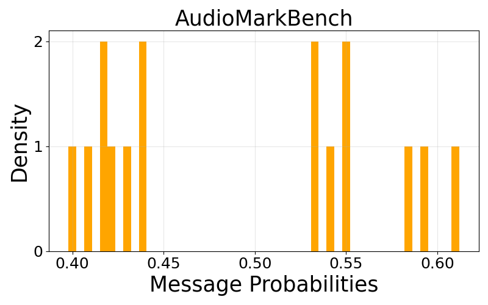 | 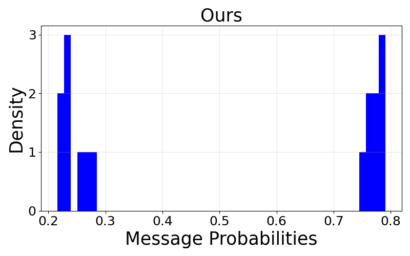 | 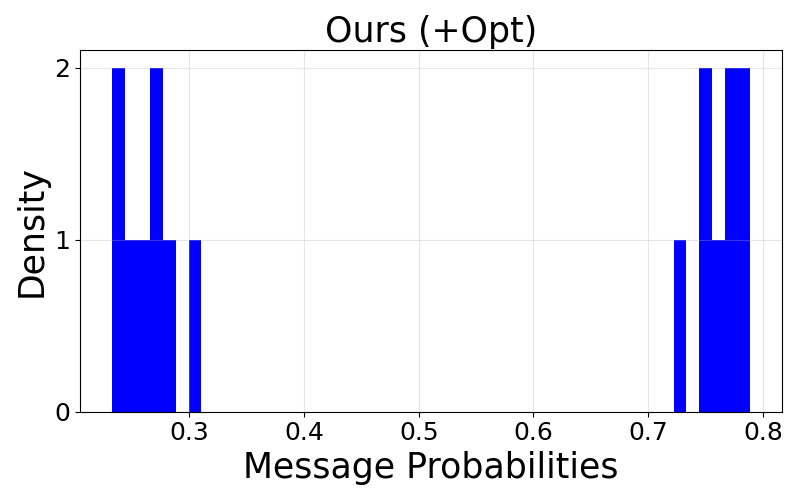 |
| Attack (Timbre) | Original (Clean) | Watermark | AudioMarkBench | Ours | Ours (+opt) |
| Audios | |||||
| Spectrogram | 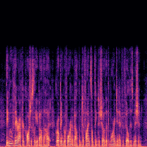 | ||||
| Watermark Message | ---------------- | 1011010010100000 | 1111111100000000 | 1111111100000000 | 1111111100000000 |
| Distribution | ---------------- | 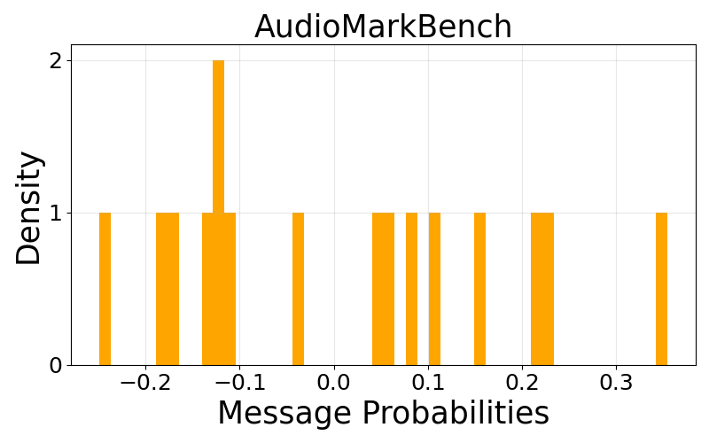 | 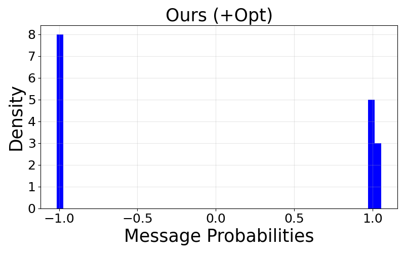 |
Watermark Removal
watermark removal aims to eliminate the original watermark from a watermarked audio
| Attack (AudioSeal) | Original (Clean) | Watermark | AudioMarkBench | Ours | Ours (+opt) |
| Audios | |||||
| Spectrogram | 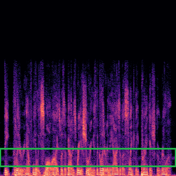 | 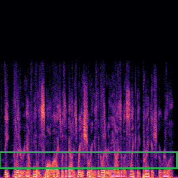 | |||
| Watermark Message | ---------------- | 0011001110110010 | 0011001110111010 | 0110110110100101 | 0111011110100000 |
| Distribution | ---------------- | 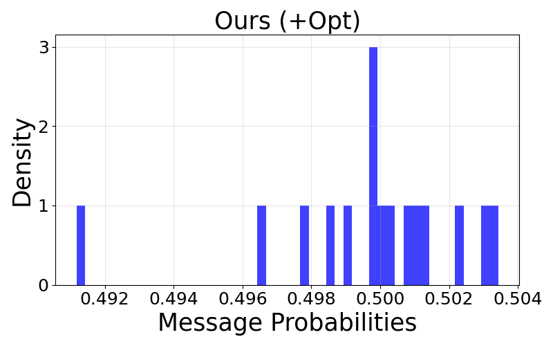 |
| Attack (Timbre) | Original (Clean) | Watermark | AudioMarkBench | Ours | Ours (+opt) |
| Audios | |||||
| Spectrogram | 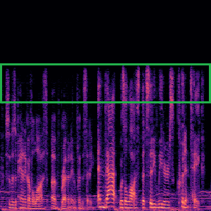 |  |
|||
| Watermark Message | ---------------- | 1011101010000010 | 0100011101111101 | 0100110011011000 | 0100111011000000 |
| Distribution | ---------------- | 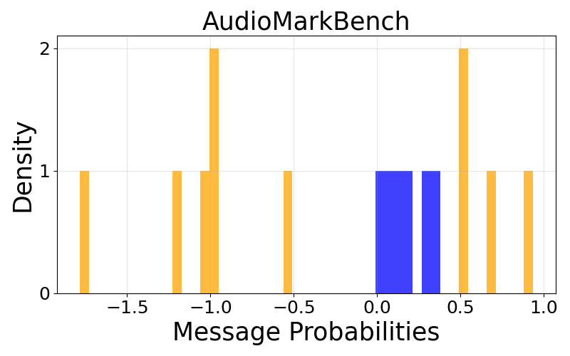 |  |
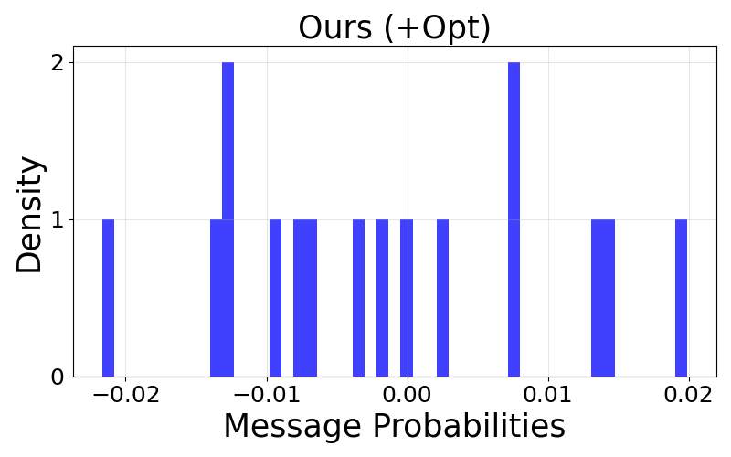 |